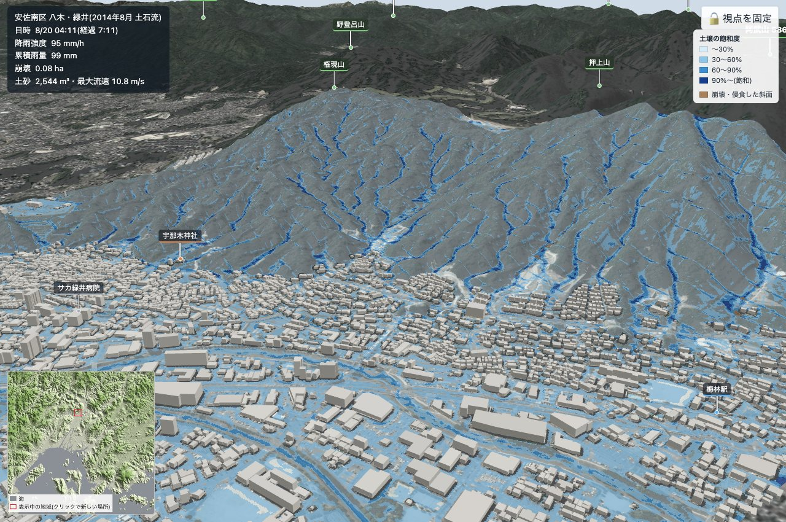

01
雨は土にしみ込み、谷に集まる
降った雨は土の中の地下水位を上げ、岩盤に沿って斜面の下へ流れて、谷の頭（0 次谷）に集まります。地表を「土壌の飽和度」で塗ると、谷筋から先に青く飽和していく様子が見えます。地下水位が上がると斜面の安全率が下がり、1 を下回ったところで土層が崩れます。
- 2014 年広島型・2018 年西日本豪雨型（模擬）
- 観測値の貼り付け
- 土層厚・粘着力・透水係数